快速删除
回忆上节课内容🤔
- 以前知道可以在插入状态下使用 del、退格 进行删除
- 现在知道了默认状态下使用通过
x删除字符 - 可以在
x前面使用[count]进行翻倍- 如
10x - 删除的字符存储在
""寄存器中 - 可以用
:reg查看寄存器状态
- 如
- 默认状态可以使用
X退格- 删除的字符也在
""寄存器中
- 删除的字符也在
- 我们掌握了在 vi 中删除字符的各种方法
- 后面还有啥呢？🤔
删除字符
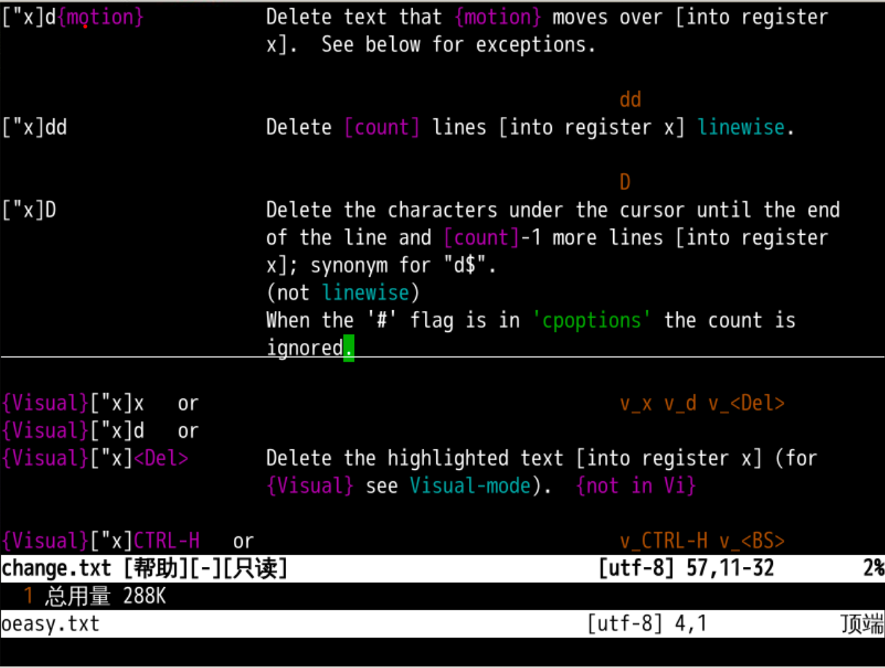
- 我们发现 dd 可以删除一行
- 试一试？！🤪
删除的内容
- 删除的东西放到哪里呢？
:reg
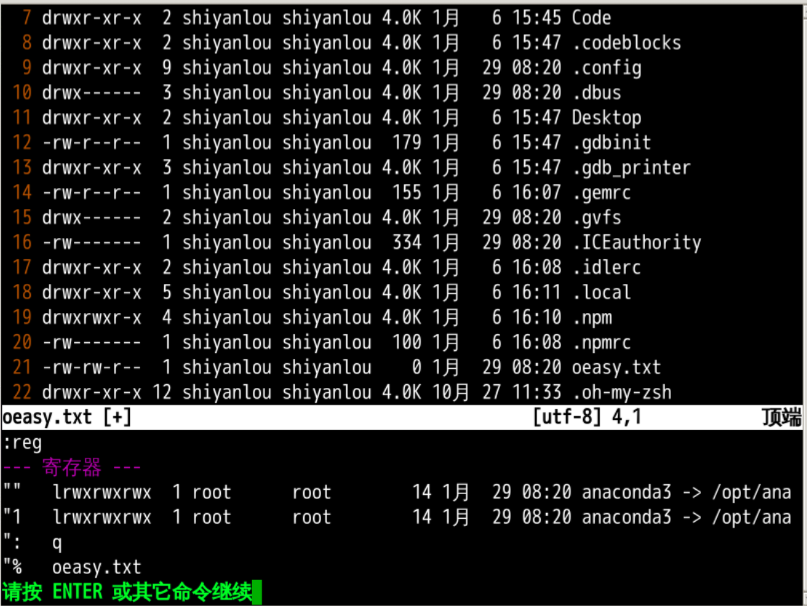
- 就放在默认寄存器
""里面 - 还可以加
[count]进行翻倍 5dd可以删除 5 行，删除之后，仍然把被删除的内容放到了""寄存器- 那这个 d
{motion}是什么意思呢？
运动帮助
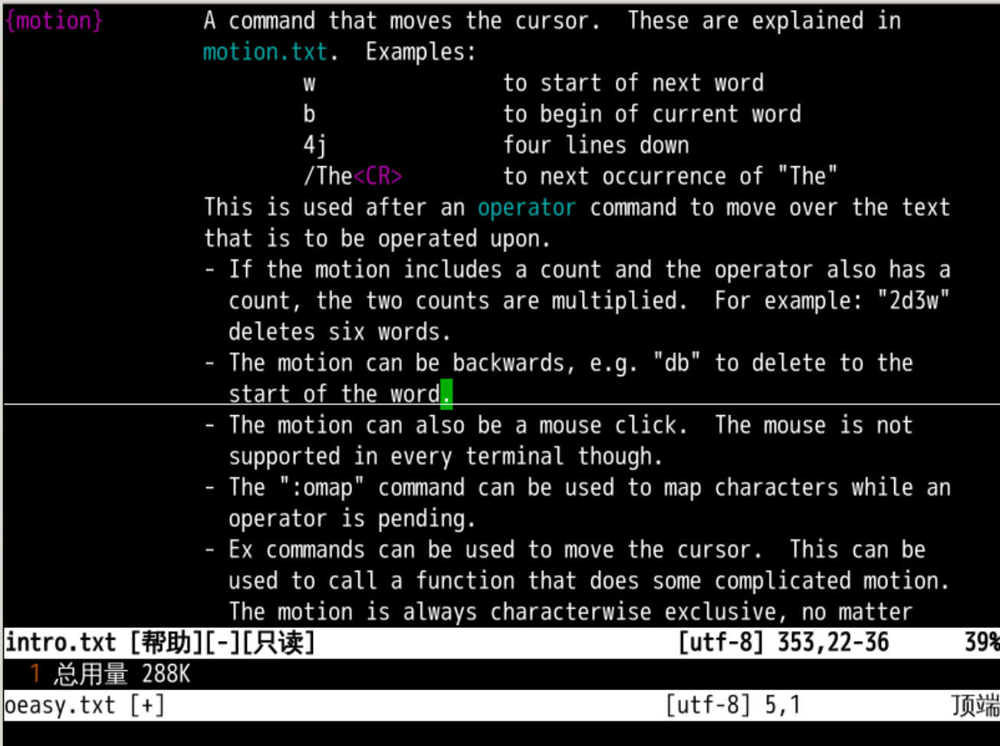
- 我们可以查询
motion的文档呀！！！ h motionmotion就是光标运动- 比如我们
G就直接到文档最后一行 dG就是从光标当前位置删除到最后一行，太爽了！🤪gg是到最开始的一行dgg就是从光标位置到最开始都删除掉了！！！ggdG就是从头删到尾8G就是到第8行d8G就是从光标位置到第8行都删除- 如果总共只有4行，怎么办？
- 如果总共4行，
8G就是到最后一行 - 所以，此时
d8G就是什么，你懂的？ - 试一试🤪
上下左右
- 光标运动的方式是
hjkl - 这些都是
motion

- 如果前面是
d - 比如
dj - d 代表删除
- j 移动到下一行
- dj 代表从当前光标行删除到下一行
- 总共删除两行
- 比如
dl - 删除当前光标字符
- 也就是
x - 比如
dh - 删除当前光标前面的字符
- 退格
- 也就是
X - 但是当光标位于特殊位置的时候
- 又会有不同
边缘位置
- 如果是在:
- 尾行执行dj
- 首行执行dk
- 不会执行删除行操作
- 如果是在
- 行尾执行dl
- 最后一个字符被删除，光标左移
- 行首执行字符dh
- 不会执行删除
- 行尾执行dl
翻倍因素
- 如果
d8j d就是删除8j从当前光标位置到往下的8行d8j将所过之处都删了-
如果光标所在下面没有超过8行，则删除到底
- 除非是vim -u NONE的情况下。
- 文件只有4行，如果执行d8j则不会有删除效果
- bash中的vim会报警告声
-
同样的
d7kd是删除7k是往上7行- 连同当前行总共8行
- 这范围里都删了
- 思考一下
d8h、d4l分别是干什么？ 🤔
按单词删
wbe还记得是什么意思么？- 不记得的话，就
h w - 如果光标在词头的话
w是到下一个word的开头b是到上一个word的开头e是到当前word的结尾

练习
- 所以我们知道
dw是从当前位置删除到下一个word的开头（删除包括中间的空格）d3w是从当前位置删除到下 3 个word的开头3dw是从当前位置做3次dw3d2w是把d2w做3次de是从当前位置删除到当前word的结尾（不删除空格）d4e是从当前位置删除到下4个word的结尾（包括当前单词）db是删除前面的wordd2b是前面2个 word- 以上是当前光标在词头的情况
- 如果当前光标在词中？
光标在词中
- 如果光标在词中的话
w是到下一个word的开头b是到当前word的开头e是到当前word的结尾
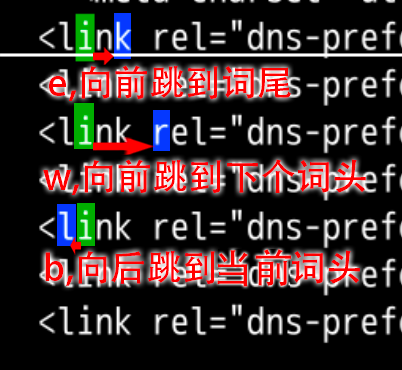
- 移动到那里就删到哪里！
- b是保留当前光标字符往前删的
- 这个还得注意
word和WORD的区别
大词小词
 - 大小词定义
-
- 大小词定义
- word包括空格和各种标点作为分隔符
- WORD只有空格被认作分割符
- 比如text-indent
- 就是 3个word
- 也是 1个WORD
- dW 就可以直接删除这个，这个很方便，尤其标识符里面有很多下划线的情况
- 说出大天也没有用，这个就得动手练！👊
行头行尾
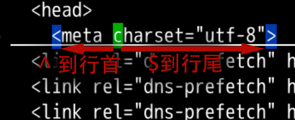
- 行头
- ^ 是到本行第一个非空字符
-
0 是到本行第一个字符，不管是不是空格
-
行尾
- $ 跳到本行最后一个字符，即使他是空格
- g_ 是到本行最后一个非空字符
- 两个按键要依次按下
-
如果忘了就要
:h查询一下 -
删除呢？
d^就是删除到本行第一个非空字符,当前字符保留d0就是从当前位置删除到本行第一个字符（不管他是否是空格）,当前字符还是保留着2d^就是将d^执行2遍,其实和执行一遍没有区别，还是删一行d2^就是d到2^和d到^，其实一样的，还是删一行- d $ 从光标删除到行尾，包括光标所在的当前字符
- d $ 还有一种做法D
删到行尾
:h D
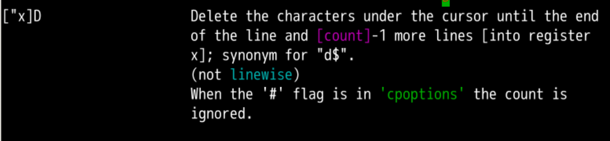
- D 本身就是 d $
- 定位的方法还有行内查找
行内查找

- 通过fo直接就跳到了右边的
o字符 dfo就是从当前位置d到fo的位置fo的位置就是从当前位置向前f到的第1个o的位置- 光标当前字符也删除
d2fo就是从当前位置d到2fo的位置fo的位置就是从当前位置向前f到的第2个o的位置2dfo就是将dfo执行2遍dfo就是从当前位置d到fo的位置fo的位置就是从当前位置向前f到的第1个o的位置- 这两个结果其实一样
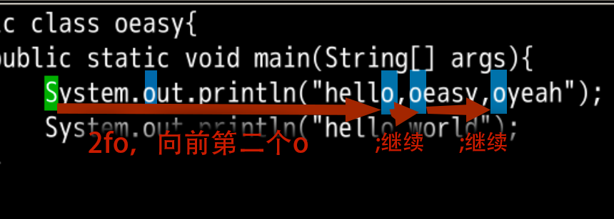
反向查找
- 反向查找的话是
F

dFo是从当前位置删除到Fo的位置Fo的位置是从当前位置反向查找F第1个o的位置- 当前光标所在字符保留
dF2o的位置是从当前位置删除到F2o的位置F2o的位置是从当前位置反向查找F第2个o的位置- 当前字符保留
2dFo就是将dFo执行2遍dFo就是从当前位置d到Fo的位置Fo的位置就是从当前位置反向查找F到的第1个o的位置
配合重复
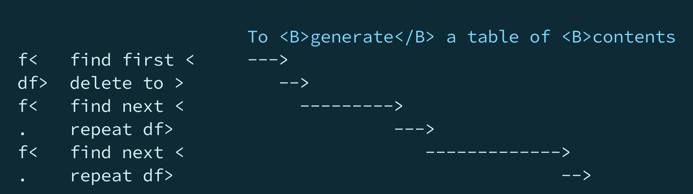
- .可以重复上次操作
- 如上图的df>
- .就是再执行df>一次
- 可以在
oeasy.java里面练习一下👊
行内贴靠
- 除了
f之外我们还有t - f e 是把光标移动到
e上面- 是跳转到
- t e 是把光标移动到
e之前的字符上面- 是贴靠到
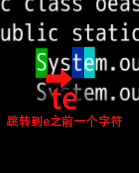
dt(是指从当前位置删除到t(t(是指贴靠到(t谁就是要贴靠到谁- 这个可以翻倍吗？
贴靠翻倍
- 可以！
- 这个也可以通过
[count]翻倍 - 2 to
till第 2 个o
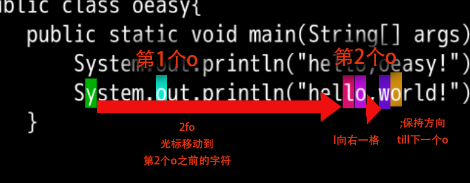
- d2to 可以删除到 红色的l
- d3to 可以删除到 紫色的w
- 不但可以翻倍
- 而且可以重复.
- 距离看不清的时候就用.
跳跃和贴靠
- 和
f相关的是跳跃 - 向
前跳跃是f - 向
后跳跃是F - 和
t相关的是贴靠 - 向
前贴靠是 t - 向
后贴靠是 T - 和
小写相关的是向前 向前跳跃是 f向前贴靠是 t- 和
大写相关的是向后 向后跳跃是 F向后贴靠是 T
全文查找
- 全文查找的两个命令是 / 和 ?
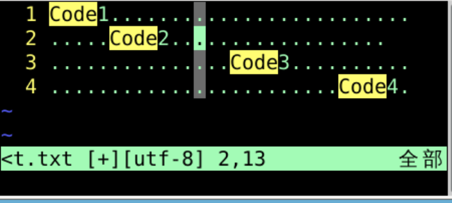
- /Code 让所有匹配的字符串高亮显示
- 如果想要删除到下一个Code应该如何呢？
删除到下一个匹配的位置
- 光标在2,13的位置
d/Code如何执行？- 摁下 d，注意状态栏
- /然后状态栏只显示
/ - 输入
Code注意状态栏 - 文中查找
Code并且高亮显示 - 摁下
回车把从当前光标一直到高亮显示的Code的位置
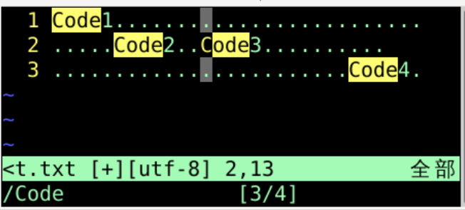
反向查找删除
- 先 u 回来
- 光标仍在2,13
- 反向查找的话就是 ?
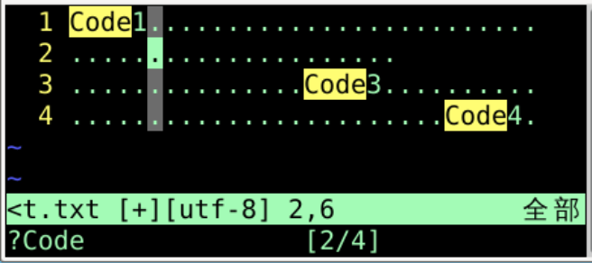
- 可以加翻倍
[count]吗？- 可以的
2d/Code
- 可以的
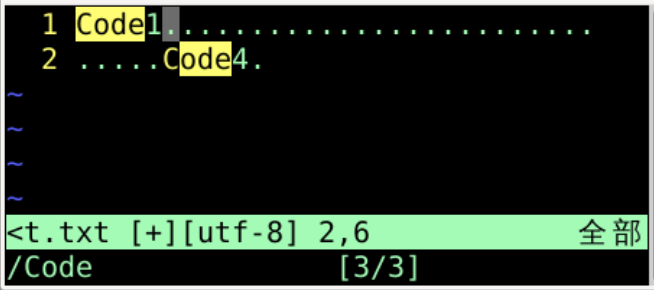
重复删除过程
- 恢复到原始状态
- 光标置于1,8
- d/Code
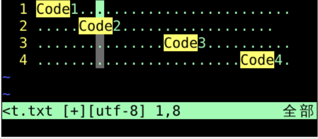
- 删除之后
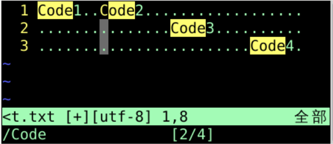
- .重复查找删除
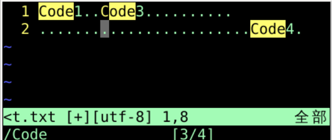
- .重复查找删除
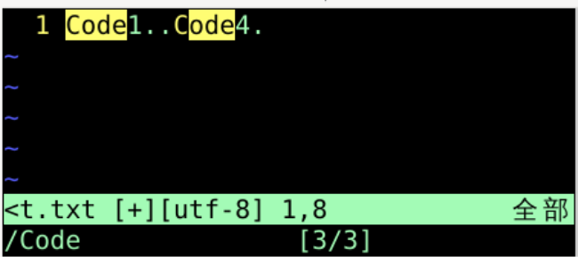
- 动手试一下！！！👊
文本区块
- 使用 {、}，让光标前后移动段落
- 使用(、)，让光标前后移动句子
- 可以使用
[count]翻倍 :h }来查看文档
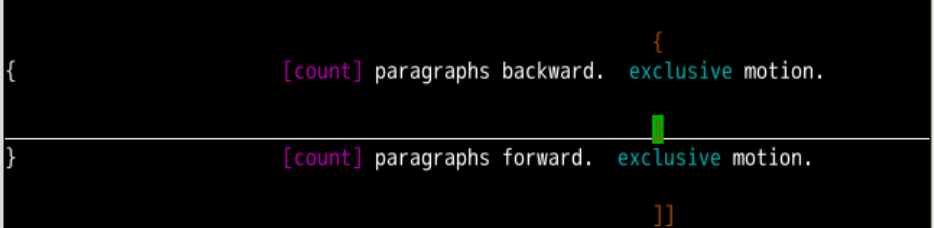
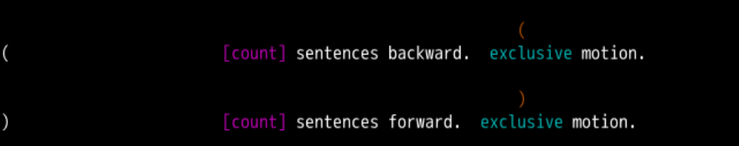
- 这些也是
motion可以和d配合 - 比如
d{、d3)
总结
-
我们大幅度地复习了整个
motion： -
直接运动
- h j k l
-
行运动
- 首行g g
- 末行G
- 第n行n G
-
单词运动
wbe- w 是到下一个
word的开头 - b 是到当前
word的开头 - e 是到当前
word的结尾 - 除了
word之外还有WORD
- w 是到下一个
-
行头行尾
- ^ 是到本行第一个非空字符
- 0 是到本行第一个字符，不管是不是空格
- g_ 是到本行最后一个非空字符
- $ 跳到本行最后一个字符，即使他是空格
-
行内跳跃和贴靠
- 向
前跳跃是f - 向
后跳跃是F - 向
前贴靠是t - 向
后贴靠是T
- 向
-
全文查找
- 查找的话就是 /
- 反向查找的话就是 ?
-
文本区块
- {、} 按段落移动
- (、) 按句子移动
-
这些
motion都可以 d配合使用 - 完成快速删除的工作
- 过程中还可以使用
[count]进行翻倍 - 删除的内容，放在
""寄存器中 - 可以配合重复.
- 那这个东西删了
- 放在寄存器里
- 我想粘贴到别的地方
- 怎么办呢？🤔
- 下次再说 👋